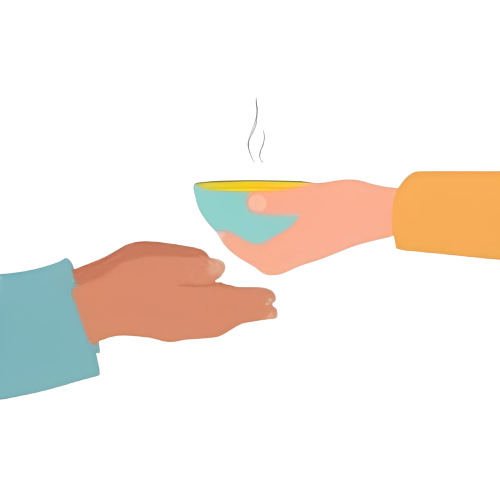

ABOUT US
Our Website aims to provide the food which is wasted in events such as marriages , birthday celebration , confereneces to the NGOs , cowshed or for as the fertilizer In 2012, the government announced that about 22% of the Indian population lives below the poverty line. According to FAO estimates in ‘The State of Food Security and Nutrition in the world, 2017’ report, 190.7 million people are undernourished in India. This represents 14.5% of the Indian population, which makes India, the home to the largest undernourished population in the world. It is estimated that saving one-fourth of the food currently lost or wasted globally would be enough to feed 870 million hungry people in the world. According to an estimation by the UN, nearly 40% of the food produced in India is wasted or lost. And this cost India one lakh crore rupees every year.